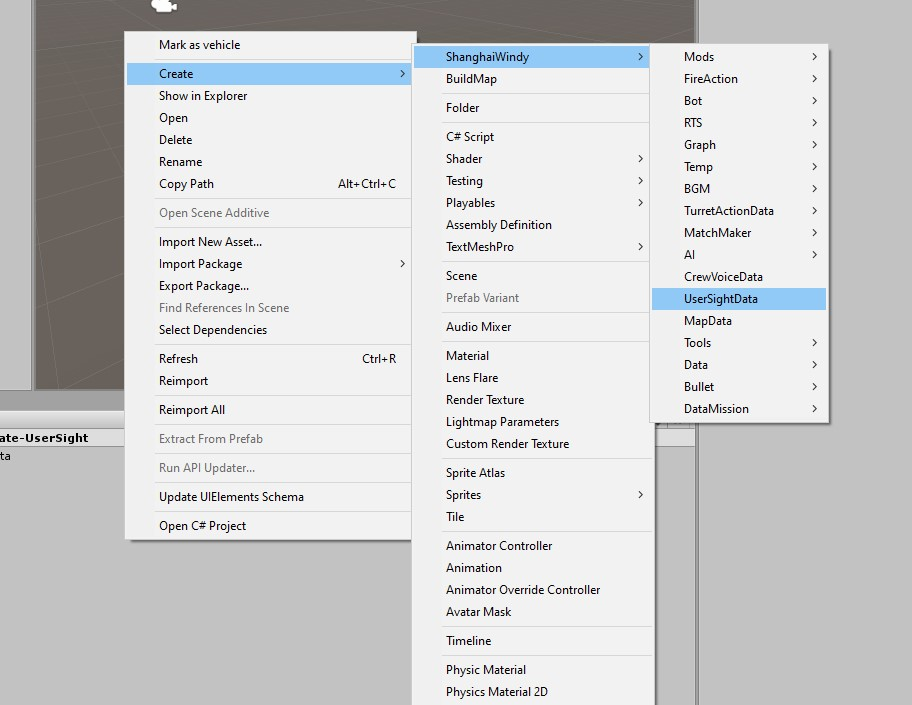
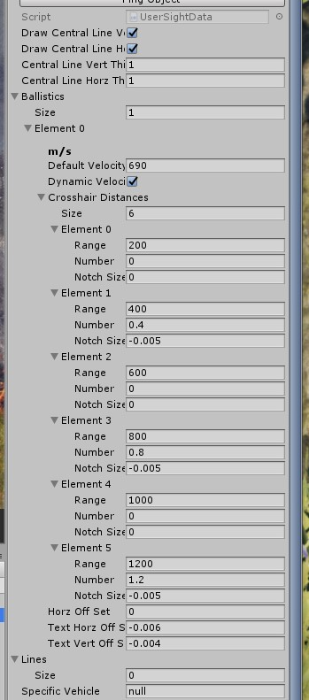
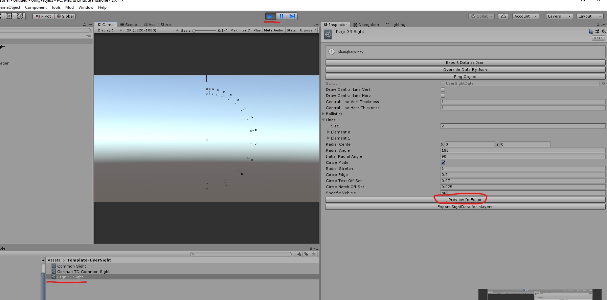
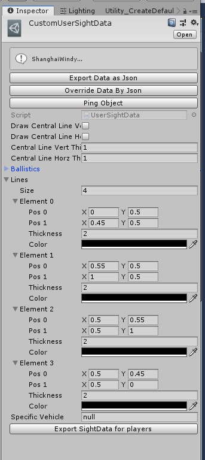

09. Sight Mod 瞄具模组 (未汉化)
打开项目
Open the project

在项目窗口中右键单击，然后选择此选项。
Right click in the project window and click this.

你可以参考此设置。Range 是绘制刻线时的目标距离。Number 是放置在刻线旁的文本。Notch Size 是从左侧增加刻线长度的数值。
You can refer this setting. Range is the distance to the target at which the notch will be drawn. Number is which text will be placed by the notch. Notch Size is how much to increase the length of the notch from the left.

你可以在编辑器中预览瞄具。只需点击 Preview in Editor 按钮，然后点击 Play。
You can preview the sight in the editor. Just click Preview in Editor Button. And then click Play.

如果你想绘制自定义线条，可以关闭 drawCentralLineVert 和 drawCentralLineHorz。
If you want to draw custom lines,then you can toggle off drawCentralLineVert and drawCentralLineHorz.
注意！Specific Vehicle 用于设置需要自定义瞄具的车辆名称。
Attention! Specific Vehicle is for setting the name of your vehicle which needs custom sight.
要导出，请点击按钮 'export sightdata for players'。
For exporting,click the button 'export sightdata for players'.